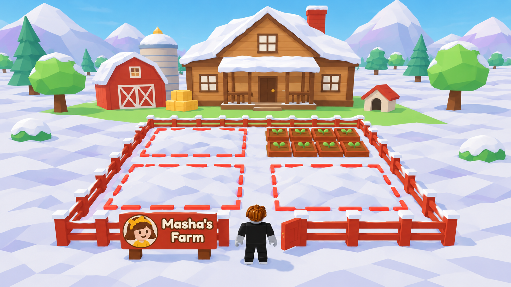
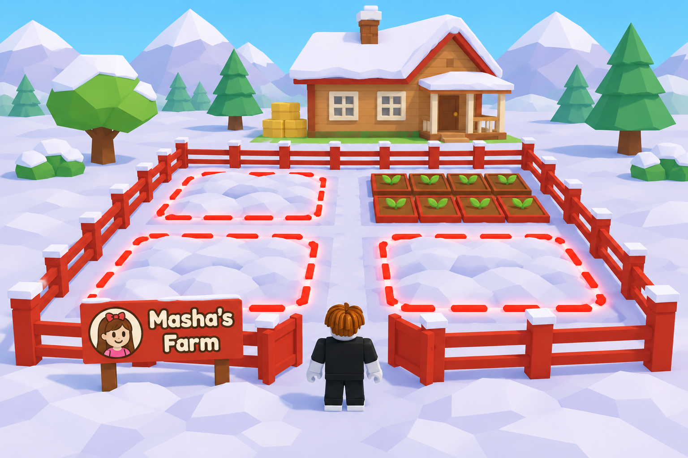
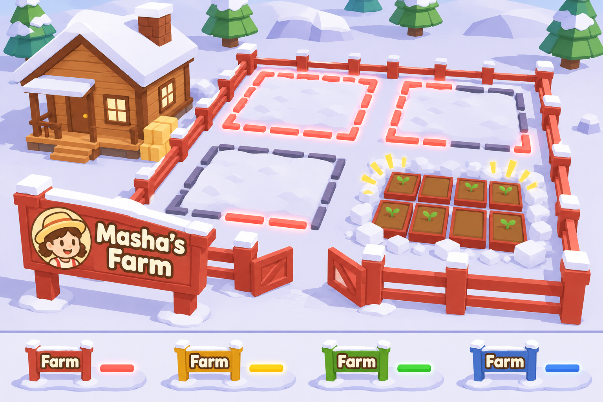

refs/garden-plot
art/refs/garden-plot

Промпт
# garden-plot-scale-a.png Generated with ChatGPT Image: Codex CLI `codex exec`, model gpt-6.1-sol, built-in image_gen, through `node tools/imagegen/cli.mjs`. Дата генерации: 2026-11-11. ## Prompt Scale concept reference for a kid-friendly low-poly cartoon snow-farm game on Roblox, the same toy style as the attached frames: flat colors, visible facets, chunky simple shapes, soft daylight. The attached game frames show the CURRENT plot, which is too big; this picture shows the plot at a smaller, friendlier scale next to the player. Camera: third person, three-quarter view from behind and a little above a player character, like a Roblox game camera about 12 studs behind the character. The player character is a standard blocky Roblox avatar about 5 studs tall (classic block body, black outfit, brown hair), standing on the snow right at the open gate of their own garden plot, seen from behind, facing into the plot. Use the character as the size ruler for everything. The plot: one player's garden in deep snow, a square of four rectangular vegetable gardens in a 2 by 2 grid with snowy paths between them, each garden buried under snow and ringed by a bright glowing outline of short segments in barn red #D6392B on the snow surface. One garden at the back is already dug out and shows its 8 raised beds in two rows of four: warm brown soil #966240 in wooden frames tinted barn red #D6392B, small green sprouts #96DC6A. A fence of square wooden posts with two rails runs around the plot, posts and rails tinted barn red #D6392B with small snow caps, one open gate in the front side where the character stands. A wooden farmhouse with a snow-capped roof stands in the distance behind the plot for scale. Scale of this variant (important): - The fence is low, only waist-high on the character: the top rail reaches the character's belt, about half the character's height. The character could easily look and reach over it. - The sign beside the gate is small and low: a board about as wide as two characters standing side by side, on two short posts, its top at about the character's head height, not above it. It shows a round avatar portrait of a cartoon girl and the words "Masha's Farm" in a bold round font, cream letters with a dark brown outline, board tinted barn red #D6392B. - The plot is compact: each garden is about 3 characters wide and 2.5 characters deep (about 8 beds fit snugly), paths between gardens about one character wide. The whole fenced plot is about 9 characters across, clearly smaller than the farmhouse. Colors only from this palette: snow #F3F6F5, lilac snow shadow #CDCDED, pale blue snow #B3C2D4, wood #CD925C, dark wood #80401B, soil #966240, straw #FAD66E, grass #96DC6A, pine #54A577, barn red #D6392B, gold #FFCE43, cream #FFFDF5, outline brown #2B1A11, sky blue. No realistic textures, no UI, no HUD, no logos, no watermark, no text except the words on the sign. ## Референсы - `build/studio-play/garden-scale-20261111-160210/02-gate-third.jpg` — style reference. - `build/studio-play/garden-scale-20261111-160210/05-plot-house.jpg` — style reference. - `art/frames/02-snow-run.jpeg` — style reference. ## Проверка - Попыток: 1. Посмотрено 11.11.2026: персонаж Roblox у калитки, забор, табличка «Masha's Farm», 4 огорода, один откопан с 8 грядками; цвета из палитры, лишнего текста и интерфейса нет. - Референсы: кадры игры `build/studio-play/garden-scale-*/02-gate-third.jpg`, `05-plot-house.jpg` (сценарий `garden-scale`), `art/frames/02-snow-run.jpeg`.

Промпт
# garden-plot-scale-b.png Generated with ChatGPT Image: Codex CLI `codex exec`, model gpt-6.1-sol, built-in image_gen, through `node tools/imagegen/cli.mjs`. Дата генерации: 2026-11-11. ## Prompt Scale concept reference for a kid-friendly low-poly cartoon snow-farm game on Roblox, the same toy style as the attached frames: flat colors, visible facets, chunky simple shapes, soft daylight. The attached game frames show the CURRENT plot, which is too big; this picture shows the plot at a smaller, friendlier scale next to the player. Camera: third person, three-quarter view from behind and a little above a player character, like a Roblox game camera about 12 studs behind the character. The player character is a standard blocky Roblox avatar about 5 studs tall (classic block body, black outfit, brown hair), standing on the snow right at the open gate of their own garden plot, seen from behind, facing into the plot. Use the character as the size ruler for everything. The plot: one player's garden in deep snow, a square of four rectangular vegetable gardens in a 2 by 2 grid with snowy paths between them, each garden buried under snow and ringed by a bright glowing outline of short segments in barn red #D6392B on the snow surface. One garden at the back is already dug out and shows its 8 raised beds in two rows of four: warm brown soil #966240 in wooden frames tinted barn red #D6392B, small green sprouts #96DC6A. A fence of square wooden posts with two rails runs around the plot, posts and rails tinted barn red #D6392B with small snow caps, one open gate in the front side where the character stands. A wooden farmhouse with a snow-capped roof stands in the distance behind the plot for scale. Scale of this variant (important): - The fence is chest-high on the character: the top rail reaches the character's chest, about three quarters of the character's height, the head and shoulders clearly above it. - The sign beside the gate is smaller and lower than a billboard: a board about as wide as three characters side by side, on two posts, its top a little above the character's head. It shows a round avatar portrait of a cartoon girl and the words "Masha's Farm" in a bold round font, cream letters with a dark brown outline, board tinted barn red #D6392B. - The plot keeps a roomy size: each garden is about 4 characters wide and 3 characters deep, paths between gardens about one and a half characters wide. The whole fenced plot is about 12 characters across, a little smaller than the farmhouse. Colors only from this palette: snow #F3F6F5, lilac snow shadow #CDCDED, pale blue snow #B3C2D4, wood #CD925C, dark wood #80401B, soil #966240, straw #FAD66E, grass #96DC6A, pine #54A577, barn red #D6392B, gold #FFCE43, cream #FFFDF5, outline brown #2B1A11, sky blue. No realistic textures, no UI, no HUD, no logos, no watermark, no text except the words on the sign. ## Референсы - `build/studio-play/garden-scale-20261111-160210/02-gate-third.jpg` — style reference. - `build/studio-play/garden-scale-20261111-160210/05-plot-house.jpg` — style reference. - `art/frames/02-snow-run.jpeg` — style reference. ## Проверка - Попыток: 1. Посмотрено 11.11.2026: персонаж Roblox у калитки, забор, табличка «Masha's Farm», 4 огорода, один откопан с 8 грядками; цвета из палитры, лишнего текста и интерфейса нет. - Референсы: кадры игры `build/studio-play/garden-scale-*/02-gate-third.jpg`, `05-plot-house.jpg` (сценарий `garden-scale`), `art/frames/02-snow-run.jpeg`.

Промпт
# garden-plot.png Generated with ChatGPT Image: Codex CLI `codex exec`, model gpt-6.1-sol, built-in image_gen, through `node tools/imagegen/cli.mjs`. Дата генерации: 2026-11-11. ## Prompt Concept reference for a kid-friendly low-poly cartoon snow-farm game, same toy style as the attached frames: flat colors, visible facets, chunky simple shapes, soft daylight. High three-quarter view from above and in front. Main picture: one player's garden plot standing in deep snow next to a small wooden farmhouse with snow caps on its roof. The plot is a square of four rectangular vegetable gardens in a 2 by 2 grid with snowy paths between them. A low chunky wooden fence runs around all four gardens, with one open gate in the front side. Next to the gate a big wooden sign on two posts shows a round avatar portrait of a cartoon girl and the words "Masha's Farm" in a bold round font, cream letters with a dark brown outline. The fence posts, the sign frame and the player name are tinted in the player's color, barn red #D6392B. Each garden is still buried under thick snow, so the beds are hidden. Around each buried garden a bright glowing outline in barn red #D6392B lies on the snow surface, a thick rectangular ring made of separate short glowing segments, clearly readable from far away. Show the digging progress on the four gardens: - back-left garden: full untouched glowing outline, snow on top intact; - back-right garden: a few outline segments are already dug into the snow as trenches and those segments are dark and unlit, the rest still glow; - front-left garden: almost every segment dug and dark, only two glowing pieces left; - front-right garden: the snow inside has just collapsed and fallen away with a soft puff of snow cubes and a small golden flash, revealing 8 raised garden beds in two rows of four, warm brown soil #966240 in wooden frames tinted barn red #D6392B, a few small green sprouts #96DC6A. Bottom strip, small and separate: four tiny copies of the same sign and a short glowing outline piece on snow, one per player color, side by side: barn red #D6392B, gold #FFCE43, green #5BB830, blue #80A0E6. Each small sign says only "Farm". Colors only from this palette: snow #F3F6F5, lilac snow shadow #CDCDED, pale blue snow #B3C2D4, wood #CD925C, dark wood #80401B, soil #966240, straw #FAD66E, grass #96DC6A, pine #54A577, barn red #D6392B, gold #FFCE43, green #5BB830, blue #80A0E6, cream #FFFDF5, outline brown #2B1A11. No realistic textures, no grime, no extra text, no UI, no logos, no watermark. ## Референсы - `art/frames/02-snow-run.jpeg` — style reference. - `art/frames/01-lobby.jpeg` — style reference.